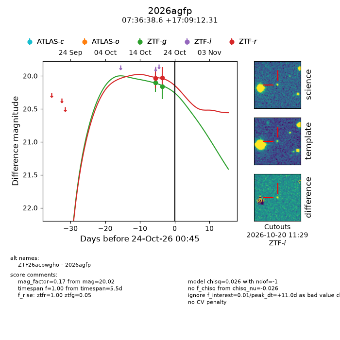
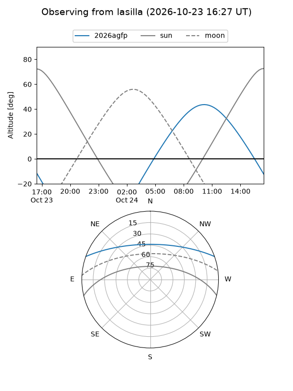
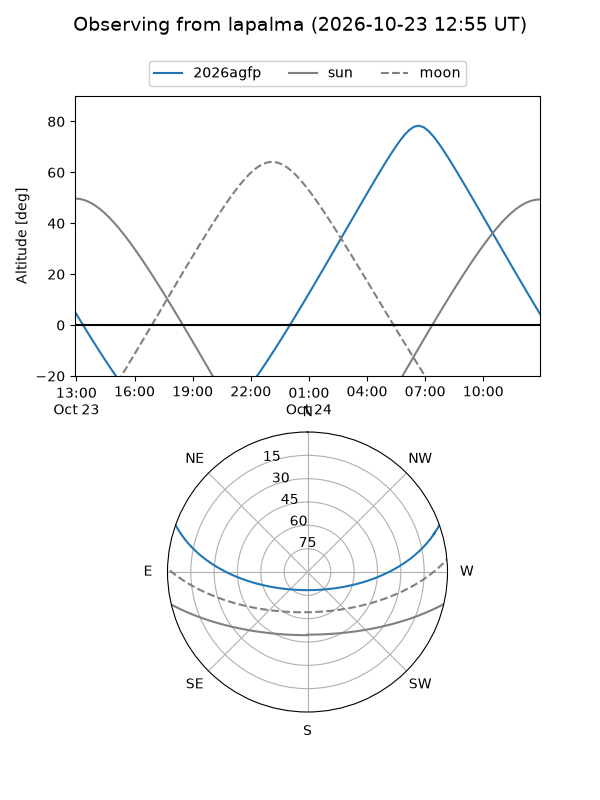
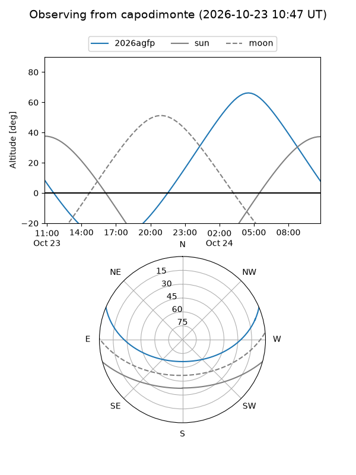
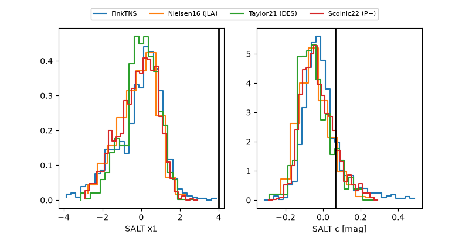

2026agfp
Target 2026agfp at 2026-10-24 00:46
Aliases and brokers:
FINK-ZTF: ztf.fink-portal.org/ZTF26acbwgho
Lasair-ZTF: lasair-ztf.lsst.ac.uk/objects/ZTF26acbwgho
ALeRCE-ZTF: alerce.online/object/ZTF26acbwgho
YSE-PZ: ziggy.ucolick.org/yse/transient_detail/2026agfp
TNS name: wis-tns.org/object/2026agfp
Direct TNS query: direct search
alt names
ZTF26acbwgho (ztf,fink_ztf)
2026agfp (tns,yse)
Coordinates:
equatorial (ra, dec) = 114.1606,+17.15342
equatorial (HMS+DMS) = 07:36:38.55,+17:09:12.31
galactic (l, b) = (202.2286,+17.52569)
Flags:
peak dt: +11.0
Photometry:
last ztfg=20.16, ztfr=20.02
2 ztfg, 2 ztfr detections
Lightcurve

Visibility



Additional plots
